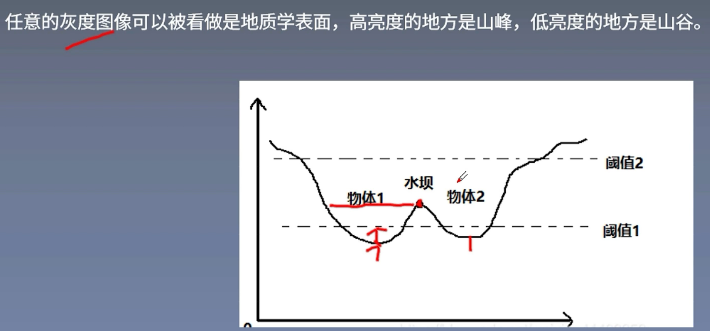
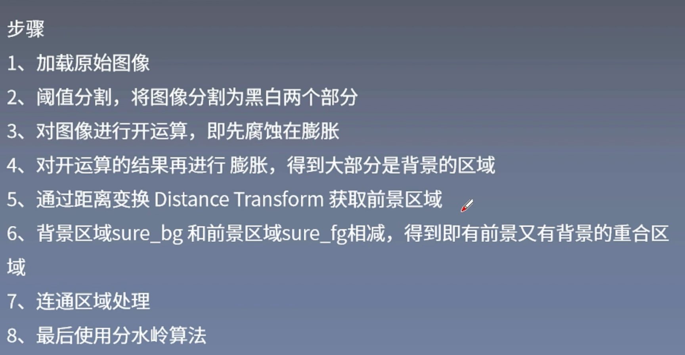

小鼠day3 algorithm learning
今天周六！白天出去潇洒了，晚上回来见缝插针学一个分水岭算法（Watershed algorithm）
什么是分水岭算法？
首先，我把这个问题丢给了ChatGPT，看看他给我的回答：
分水岭算法（Watershed Algorithm）是一种图像分割算法，通常用于将数字图像分割成不同的区域或物体，使得同一区域内的像素具有相似的特征或属性。这个算法的名称来源于类比水流流向山脉的过程，其中山脉的山脊是图像中不同区域之间的分界线，而水流则沿着山脊流动并汇聚到低谷区域。
这个解释相对来说比较能让我接受，因为本质上我在小鼠的paper中看到这个算法的时候，我以为这个算法是一个聚类的算法，但是第一句话介绍他是个图像分割算法，让我有些恍惚。好在后面的叙述中说同一区域内的像素具有相似的特征或属性，这表明他还是具有一些聚类功能的，那么这个聚类的功能该怎么体现出来呢？就得看他的一些工作原理了，先看GPT的讲解：
图像梯度： 分水岭算法首先计算图像的梯度，以确定图像中的边缘和过渡区域。这些梯度信息有助于标志出不同的物体或区域之间的边界。
标记点（Markers）： 在图像中选择一些像素点作为标记点，这些点通常代表了你感兴趣的物体或区域。标记点可以手动指定，也可以通过其他图像分割算法自动提取。
漫水填充： 分水岭算法模拟了一个“洪水填充”的过程。从标记点开始，将水流注入图像，沿着梯度边界流动，直到不同的水流汇聚到一起。这些汇聚点就代表了分割后的不同区域的边界。
区域分割： 最终，通过分析水流汇聚点的情况，可以将图像分割成不同的区域，每个区域代表一个物体或特定的特征。
从上述的文字中感觉这个描述还是比较抽象的，给人一种卡卡颂的感觉，像是那种多个拼图中的河流拼在一起之后结算一样，这里也是根据梯度信息来标志出不同的物体或者区域的边界，然后通过一些标记点表达哪些地方是感兴趣的，从这些地方开始灌水，从而把边界相连的地方划分在一起，从而实现图像的分割。但是总体而言还是更偏向与一个分割方法，还需要重新回去看一下paper。
分水岭算法详解，这里参考了一下b站深度之眼官方账号的讲解

这里的的意思大概是可以看到有两个地方是下凹的山谷，会往山谷中同时注水，然后两边注水后相遇的地方就需要建立一个水坝也就是一个边界来划分两个分类。
所以大致就是：给每个孤立的山谷（局部最小值）注入不同颜色的水（标签）。当水涨起来，根据周围的山峰（梯度），不同的山谷也就是不同的颜色会开始合并，为了避免山谷合并，需要在水要合并的地方建立分水岭，直到所有山峰都被淹没，所创建的分水岭就是分割边界线，这个就是分水岭的原理。
这里给出了一个大致的步骤图片：

其中阈值分割会将图片分割为黑白两个部分，黑色是背景，白色是前景，但是由于算法局限性，可能会在背景中包含一部分前景，即分割效果不好，所以要对图像进行开运算，把一些连接起来的地方断开 之后再进行膨胀，前景的区域放大，领域扩张一圈再提取背景，再用距离变换来获取前景区域，用距离变换可以找到一些比较集中的地方，之后背景区域和前景区域相减，得到既有前景又有背景的重合区，这个区域用0表示，其他的区域可能是1、2、3…，从而进行分水岭算法。
这里视频中以一个硬币图片为例，因为截图麻烦这里就不把图片放上来了
简单来说，就是图片中有几枚硬币，首先先将其转化为灰度图（黑白），然后会得到以前前景和背景，把其中前景的部分（也就是可能是硬币的部分）进行膨胀，也就是这些硬币的圆形会被放大一圈，这个时候再从其中提取背景，那因为硬币已经放大了，所以提取到的背景一定是背景 然后设置距离变换来提取前景，大致就是比如设定一个距离后，原本的硬币会有一个边缘，将这个边缘的轮廓中距离边缘一定距离的部分提取出来作为前景。
这里还是附上连接 帮助以后的理解【3_5分水岭算法图像分割.mp4】 https://www.bilibili.com/video/BV1tt4y147Du/?share_source=copy_web&vd_source=823b267e36481d5cef09a8c983a2ebef